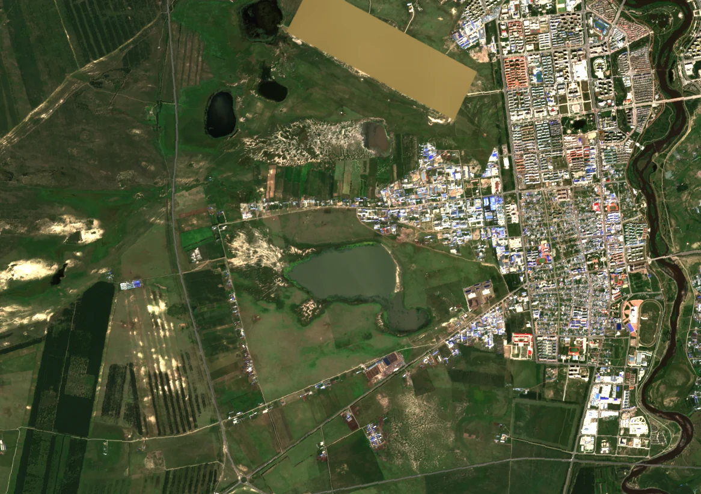

底图预览 · 正在载入图谱数据
第一人称地形漫游
左键点击接管鼠标；按住右键或左键拖动转头。WASD 移动，Shift 加速，F 切换步行／飞行，画面上滚轮调速。飞行：E 或空格上升，Q、C 或 Ctrl 下降。Esc 先释放鼠标。
移速
地形
步行视高 1.7 米；切到飞行升至 25 米，飞行移速默认 8×，水平和升降同档；Shift 临时加速。下方地形倍率只夸张地势，不改变相机视高。30 米地表仅作模拟，不判断道路或设施能否通行。
篇章一 · 水怎么来到呼吉尔诺尔
·
49.1380°N, 119.6880°E · GLO-30 —
·
2D Canvas
展开图表
地点与周边对照先看主湖，再沿来水查桥涵与办公院
主湖来水主线
周边独立对照（不与主湖合并）
背景影像与历史卫星底图拍摄日独立于 JRC 月度水面统计月
单景日期与月度水面独立。

查看该景原图版权署名
卫星影像时间线
Landsat、Sentinel-2、Google Earth 历史影像按年份同列；从早到晚。
图例与证据分级地图证据色由地图模块独立管理
◉
实拍现场照片相机点与实拍桥涵
┄
模型30m 地表推演虚线／剖面
✎
手绘用户蓝／红草图，保留原笔断口
×
待核缺口未证连通或办公院未定位出水口
○ 合格零检出：有效覆盖达标但未检出水体，不等同地面干。
地形坡向：局部下坡，不是水流；箭头密度与等高线独立。
═ 现代等高线：5 米等高距，每 10 米加粗；30 米地表模型生成，不代表测量精度。
◇ 历史图参考：1933–1980 纸图线索（不随月份变化）
展开专题核查符号（S7 低地与 2013 影像质量）
★ S7 低地正例 (5)：两套地形均稳定偏低的候选点
⊘ 对照反例 (S7 / S3)：非稳定低地或高出周边参照
✓ 2013 影像可用 (4)：仅表示像元清晰，不代表有水
✕ 2013 影像排除 (6)：云或阴影遮挡，不代表干涸